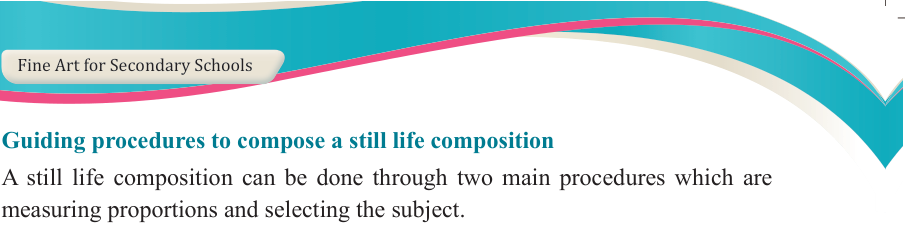
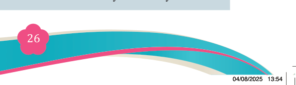
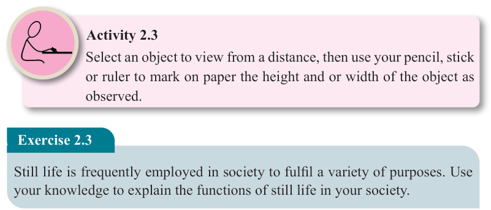
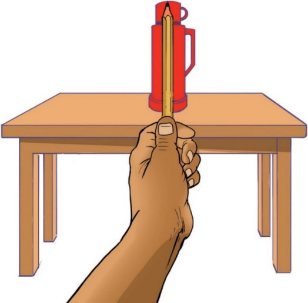

Fine Art for Secondary Schools

26

Student’s Book Form Two

Guiding procedures to compose a still life composition
A still life composition can be done through two main procedures which are

measuring proportions and selecting the subject.
Measuring proportions and selecting the subject
Measuring proportions involves measuring parts of the same object with another object in the same composition. Still life composition needs clear proportions of an object for the result to be realistic. This can be done through a measuring tool

and a viewfinder.
(i) Measuring tool
A measuring tool can be a pencil, a stick, or a ruler. Figure 2.8 (a) shows how to use a measuring tool to measure the object. This process is known as ‘sight size’ technique.

Figure 2.8 (a): Measuring objects by a pencil: Sight size technique
Activity 2.3
Select an object to view from a distance, then use your pencil, stick or ruler to mark on paper the height and or width of the object as observed.
Exercise 2.3
Still life is frequently employed in society to fulfil a variety of purposes. Use your knowledge to explain the functions of still life in your society.
04/08/2025 13:54